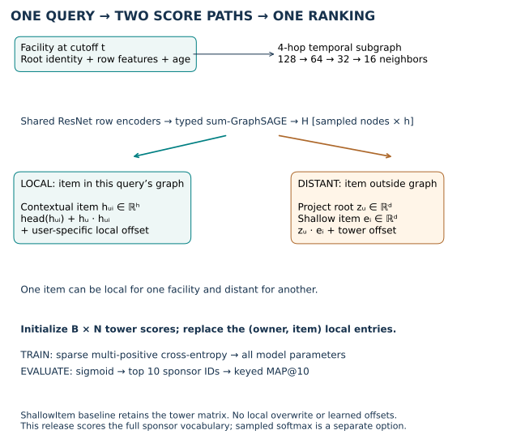
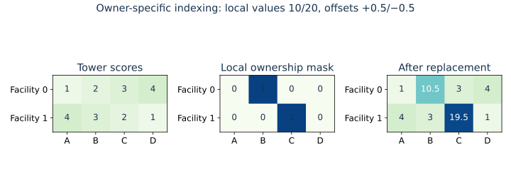
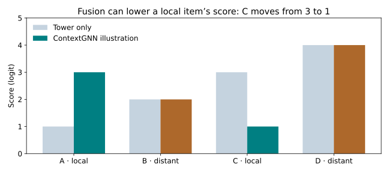
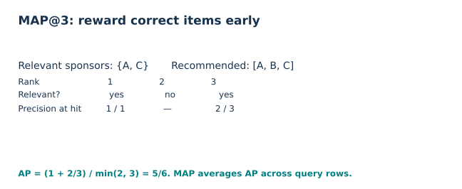

Year 4 · Quarter 3 · Lesson 144
ContextGNN: one graph, two ways to rank
The win: implement a ranking rule that uses a different representation for each nearby facility–sponsor pair while still scoring sponsors outside that facility’s sampled graph. Start with the guided trace; use the notebook for the three implementation contracts and your written defense.
Lesson 143 asked what makes a reproduction claim defensible. Its model predicted one number for one entity. Recommendation adds a different problem: which of many candidate entities should come first? Better message passing alone does not decide how to represent each candidate relative to the query. This lesson connects the mission’s relational-model thesis to a concrete sponsor recommendation task.
Recall bipartite graphs, temporal sampling, and validation-only selection: what identifies a query when a facility appears at several dates? What is lost if every facility sees the same sponsor embedding? Why does a validation-selected configuration need a separate test score?
See the idea · then trace the details
ContextGNN: combine local context and global identity
The two prediction routes cover different candidate situations.
1Build query-local context
Query entity → sampled relational neighborhood
Local graph computation builds representations conditioned on the query neighborhood.
2Keep two scoring routes
Contextual candidates | global candidate embeddings
Candidates available in local context can use contextual representations. A global embedding route supplies representations beyond that neighborhood.
3Combine into candidate scores
Route-aware scores → ranked candidates
The prediction layer combines the relevant routes. Candidate eligibility and ranking evaluation are separate from the architecture.
Pause and predict: Why retain a global candidate route if the local graph is informative?
The sampled local neighborhood need not contain every eligible candidate. The global route covers candidates outside it.
Answer: The sampled local neighborhood need not contain every eligible candidate. The global route covers candidates outside it.
1 · Why two towers leave something unresolved¶
A query here is a facility and a cutoff time. A candidate is a sponsor. The task asks which sponsors will conduct trials at that facility in the next 365 days. The graph connects facilities, studies, sponsors, and other tables through foreign keys. At prediction time, temporal sampling admits timestamped rows only through the query cutoff.
A two-tower model represents the query as a vector and each candidate as another vector. Their dot product—multiply matching coordinates and sum—gives a score. Candidates with larger scores are ranked first. An item vector can be reused across queries, making catalog-wide scoring efficient. But that sponsor’s vector does not itself change to describe its relationship with this particular facility.
Worked example. Facility vector [1, 0] and sponsor vector [2, 3] yield score 2. A second facility vector [0, 1] yields score 3 for the same sponsor. Two towers can therefore produce personalized scores. Their limitation is narrower: the sponsor representation remains pair-agnostic. Do not confuse a shared item embedding with identical rankings for every user.
A pair-wise representation instead encodes a candidate inside the query’s context. This can capture a facility→study→sponsor connection and its surrounding facts. Computing a separate graph for every possible pair would be expensive. Restricting prediction to the facility’s local graph is cheaper, but any correct sponsor outside that graph becomes unreachable. These complementary limitations motivate ContextGNN, §§3–4.
2 · Model architecture: share the graph, split the scores¶
In plain terms. Run one graph computation around the facility. Read both the facility state and its contextual sponsor states from that computation. Use a separate shallow representation to score the rest of the sponsor catalog.


The released RelBench benchmark uses four graph layers for rel-trial. It samples at most 128, 64, 32, then 16 neighbors per hop with the last temporal strategy, which favors recent eligible neighbors. Sampling is query-owned: each copied node belongs to a particular root query and must respect that root’s cutoff.
Encode rows. Each table has a ResNet row encoder. A ResNet is a feed-forward network with residual additions that help carry information through multiple blocks. Categorical, numerical, text-embedding, and timestamp columns become a common hidden width h. Relative-age encodings express time relative to each root. A learned identity vector marks the root so the computation can distinguish the querying facility from other nodes.
Propagate. Heterogeneous GraphSAGE aggregates neighbors separately for each foreign-key relation, then combines relation outputs. “Heterogeneous” means table and relation types retain distinct operations. This release uses sum aggregation, node-wise layer normalization, and ReLU between layers. A sampled sponsor state h_ui has h coordinates and depends on query u; the root state is h_u.
Score outside the graph. Project the root into d coordinates: z_u = W h_u + b. The shallow sponsor vector e_i also has d coordinates. “Shallow” describes the candidate encoder, not the query encoder: the query still uses the GNN. The source supports learned ID lookups, feature-based embeddings, or their sum (FUSION). Feature-based embeddings pass sponsor columns through a small residual network; ID lookups are learned vectors indexed by sponsor ID.
Scope check. With learned sponsor-ID lookups, entirely new sponsors have no trained lookup vectors. New query facilities and unseen candidate sponsors are different generalization questions.
FUSIONin the source’s item encoder is also different from the final fusion of local and distant scores.
Score inside the graph. The paper explains local pair scores plus a personalized offset. The pinned release makes this more specific:
tower[u, i] = dot(z_u, e_i) + tower_offset(z_u)
local[u, i] = head(h_ui) + dot(h_u, h_ui) + local_offset(z_u)
A head maps a hidden vector to the scalar score. An offset shifts all scores from one branch for a particular query. Their relative shift lets the model favor contextual candidates or exploration. Both branches share the graph computation. The full visible notebook includes the encoders, typed graph layers, item encoder, score construction, and trainer—not just a call to a packaged ContextGNN.
Source distinction. The release does not inject shallow sponsor embeddings into graph inputs as described in the paper’s two-tower discussion. Its contextual head also adds a root–candidate dot product and uses two learned offsets. We teach and execute this pinned release explicitly; historical paper identity remains a separate claim. Source.
3 · Fusion is replacement, with ownership¶
Initialize a matrix of tower scores with shape B × N: B query rows and N sponsor candidates. For every sampled sponsor, replace precisely its (query owner, sponsor ID) entry with its local score. A sponsor can appear under several query owners, with different contextual vectors and different cutoffs.


Predict first. If a local sponsor’s tower score is 3 and its contextual score is 1, should the final score be 1, 3, or 4? The released operator chooses 1. It does not add the two branches and does not take their maximum. Other sponsors keep their tower scores.


The illustration holds learned vectors fixed, so changing only the offset isolates score calibration. Changing graph membership is a second intervention. A sponsor outside the sampled graph is not necessarily new or never previously encountered; sampling may simply omit it.
TODO 1 — fuse_scores. Implement the owner-specific replacement without mutating the supplied tower matrix. The full model calls your function. The CHECK verifies two queries that share a candidate ID and checks gradients: overwritten tower entries must receive no gradient through the final score, while local values and offsets must receive it.
4 · Train on future links, constrain access to the past¶
The label for (facility, t) is the distinct set of sponsors linked through studies whose facility-study date lies in (t, t + 365 days]. The left boundary is open; the right is closed. The source joins sponsor-study records by study ID. Preserve that exact label rule instead of adding an undocumented sponsor-date filter. Query rows without eligible targets and dangling entities follow RelBench’s filtering rules. Task source.
The training objective is sparse multi-positive cross-entropy. A query can have several correct sponsors. The implementation consumes the listed positive (query, sponsor) pairs and trains scores against the full sponsor vocabulary. “Sparse” refers to storing positive pairs compactly; it does not mean this benchmark samples only a few negative candidates. The release has a separate sampled-softmax path, but the selected benchmark does not call it.
TODO 2 — audit_cutoffs. Check every timestamp against its own query owner. With cutoffs [5, 10], a timestamp 6 owned by query 0 is a violation even though it is below the batch maximum 10. Your function runs on the actual sampled batches in the full trainer.
Scope check. Correct event-time filtering does not prove when a non-timestamped attribute became available in the real world. We audit the released temporal contract and state the unresolved availability-time boundary.
5 · Rank and score the complete query population¶
Average precision (AP) rewards putting relevant items early. At every relevant rank, compute the fraction of recommendations so far that are correct. Sum those fractions and divide by the smaller of the number of relevant items and the cutoff k. Mean average precision (MAP) averages AP across query rows. Here k = 10.


Worked example. Relevant sponsors are {A, C} and the top-three list is [A, B, C]. Precision is 1 at the first hit and 2/3 at the second hit. AP@3 is (1 + 2/3) / 2 = 5/6. A second query with AP 1/2 gives MAP (5/6 + 1/2) / 2 = 2/3. One repeated facility at two dates still contributes two distinct query rows.
TODO 3 — keyed_map. Align predictions by (facility ID, cutoff) before scoring. Reject missing or duplicate query keys and repeated candidate IDs. The CHECK shuffles prediction order so a positional shortcut fails. The full trainer compares your metric with RelBench’s evaluator on every validation pass.
The paper reports MAP as percentages: 28.02% means 0.2802, not 28.02 in the Python evaluator. A ranking over a small handpicked candidate set cannot establish the full-catalog MAP target.
6 · Execute the named reproduction and defend its boundary¶
The selected target is Table 2, rel-trial/site-sponsor-run: ContextGNN versus ShallowItem, with published test MAP 28.02% versus 10.66%. This task is especially informative because both nearby context and distant candidates can matter. It does not establish the paper’s cross-task average improvement. Paper results.
The complete released search requests 50 Optuna trials for each architecture, then five repeat fits of each selected configuration. Optuna proposes hyperparameters using validation results; its median pruner can end unpromising trials. Each fit runs up to 20 epochs and stops when validation MAP falls more than 0.001 below its best value. The source also caps training at 2,001 batches per epoch because its stopping comparison is steps > 2000. We preserve and report that detail.
The paper describes a narrower search than the source. The release additionally searches encoder depth, item width, embedding mode, normalization, and learning-rate decay. Its Optuna sampler is unseeded, and repeated fits consume a continuing random stream. Our executable reconstruction seeds the search and each fit explicitly; these are recorded deviations, not recovered historical seeds. Validation chooses configurations and checkpoints; test scores never choose settings.
| Evidence | Validation MAP@10 | Test MAP@10 | Scope |
|---|---|---|---|
| Published ContextGNN | 28.55% | 28.02% | Paper Table 2 |
| Published ShallowItem | 12.59% | 10.66% | Paper Table 2 |
| shallowrhsgnn timing pilot | 3.758% (partial) | NOT_RUN | 4,096 training queries; first 1,024 validation rows |
| contextgnn timing pilot | 13.250% (partial) | NOT_RUN | 4,096 training queries; first 1,024 validation rows |
Full selected-task reproduction: INCOMPLETE. Pilot scores are not comparable with the paper or each other as a model-selection result. Historical identity: NOT_ESTABLISHED. Whole-paper reproduction: NOT_RUN.
Budget decision: STOP. Timing-based scenario at the pilot configuration: both 50+5 arms cost about USD28.75 even at one train/validation epoch per fit, or USD575.03 at twenty; test passes and heterogeneous search widths can change costs. Reserved allocations plus overhead: USD3.35. These are projections, not a guaranteed lower bound or an invoice. Full search is not dispatched when its projected cost exceeds USD10.
An independent interval/join algorithm reconstructed 733,741 train/validation/test query labels. Saved pilot rankings independently rescored: 2,048.
Real pilot first-batch gradients contain nonfinite entries: shallowrhsgnn: 1408, contextgnn: 1408. Finite output parity does not establish healthy optimization.
The synthetic full-network fixture and original score-operator gradient comparison are mechanism evidence only. The stale RHS evaluation cache is independently demonstrated in that fixture.
A source-matching failure mode. The RHS item encoder caches its embeddings in evaluation mode. The release does not clear that cache when training resumes. Our mechanism probe tests whether changing item weights leaves evaluation output stale until the cache is cleared. The reproduction preserves the released behavior. A repaired-cache comparison would be a separate experiment and must not silently replace these results.
The reproduction budget is $10 total, including retries, preparation, and validation. The measured pilot is a cost and correctness probe, not a published-score reproduction. If the complete search cannot fit, preserve the runnable full experiment and mark it incomplete. Never turn a partial search into “full reproduction” by renaming it.
Protocol and execution commands · Student notebook · Executed reference notebook · Quick reference.
7 · Exit: explain the score and defend the claim¶
Without looking back, explain why the same sponsor can have different contextual embeddings under two facilities. Trace which final score changes when its owner-specific membership changes. Then defend the evidence status of a one-epoch pilot that uses all training rows but skips the 50-trial search.
Written defense: identify a failure that output parity cannot rule out, explain the cached-embedding test, and state what additional evidence would support a full selected-task reproduction. The author’s runs do not establish your mastery. Ask the teaching agent to review your three functions and your explanation; follow-up questions are welcome.
For the primary reading, use Yuan et al., ContextGNN, §§3–5, then compare the pinned implementation. This prepares the next lesson’s question: how can a relational transformer encode the query’s context without this particular message-passing design?
Carry this forward. ContextGNN changes how query–candidate scores are formed. Lesson 145 returns to a scalar target and changes communication among sampled rows with RelGT. Continue to Lesson 145.